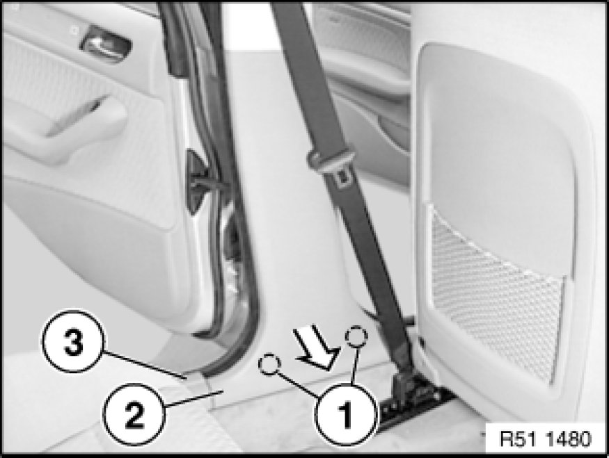
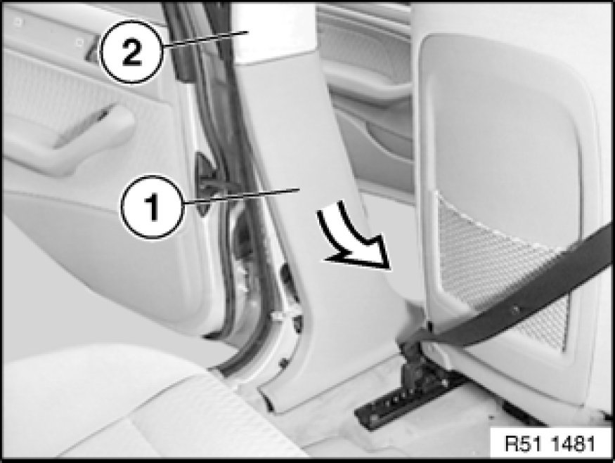
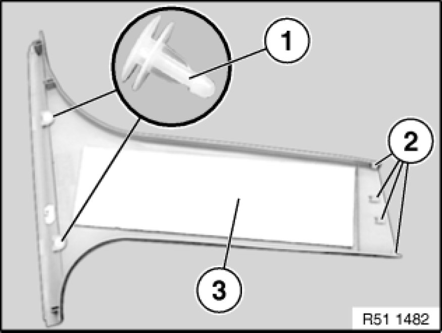

Removing and Installing/Replacing Trim for Left or Right Door Pillar (Bottom)
51 43 150 - Removing and installing or replacing trim for left or right door pillar (bottom)

Necessary preliminary tasks:
- Remove front entrance cover strip 51 47 000 Removing and Installing/Replacing Front (Inside) Left or Right Entrance Cover Strip

Snap trim (2) out of clips (1) at bottom.
Feed out trim (2) for door pillar from entrance cover strip (3).

Partially detach mucket in area of B-pillar panel.
Carefully feed out bottom trim (1) from top trim (2).

Installation:
If necessary, replace faulty clips (1).
Guides (2) on trim (3) must not be damaged.